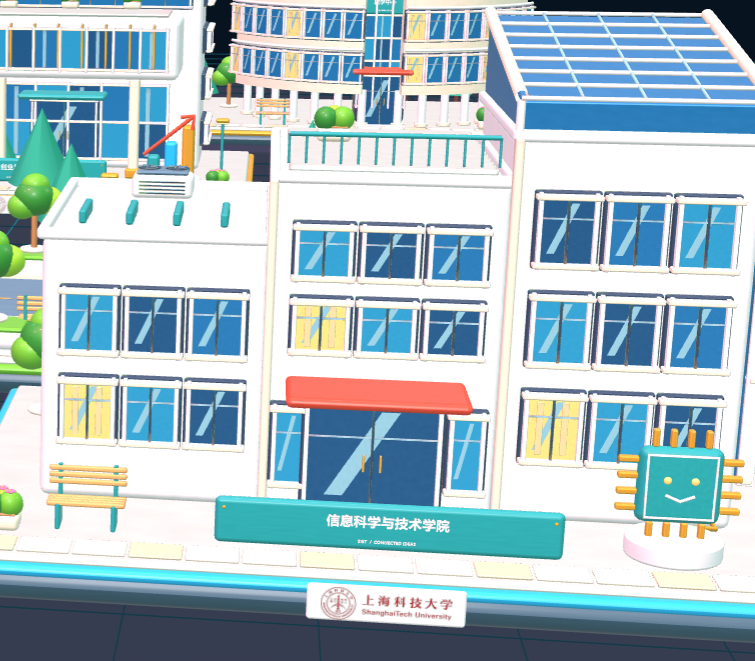
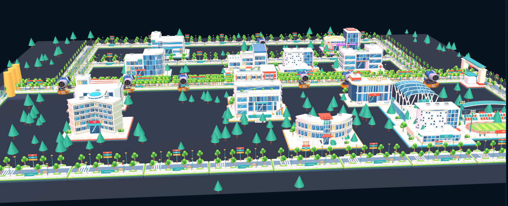
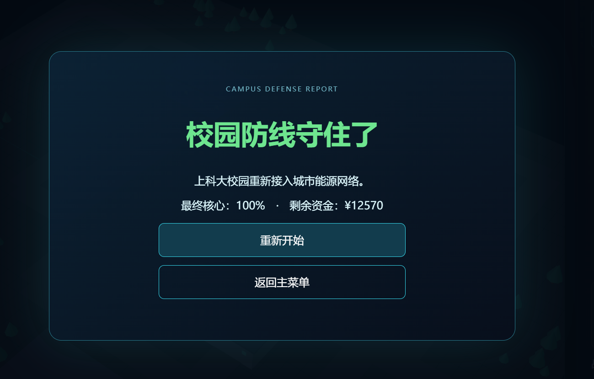
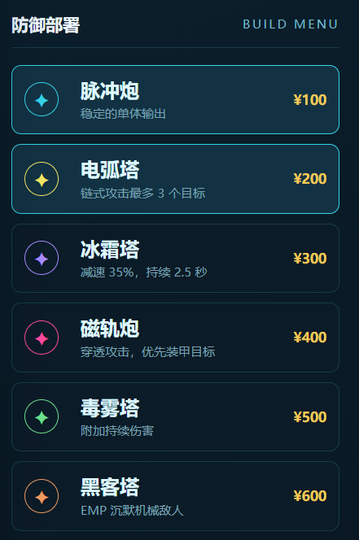
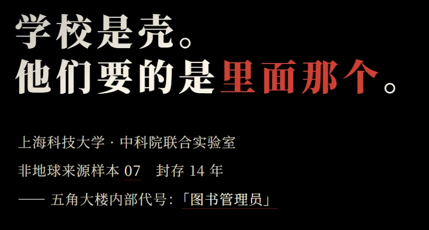
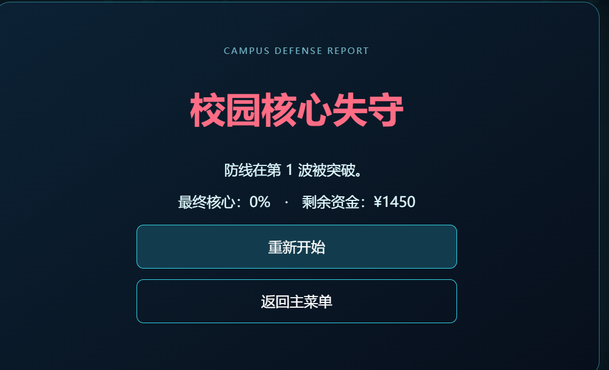
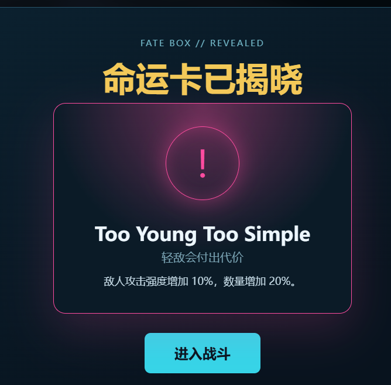
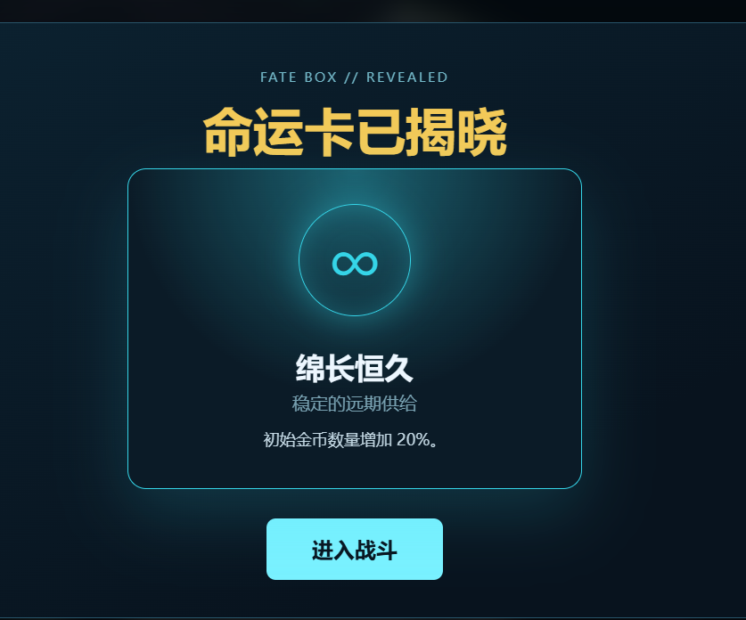
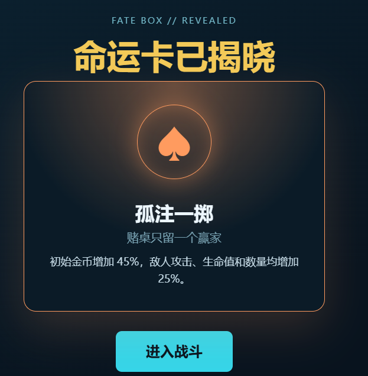

地铁站出站
AI 控制的人潮涌入校园，异常步频成为第一条线索。
以真实校园为舞台的 3D 塔防游戏。异常信号穿过校园边界，玩家需要在核心失守前完成部署。

CAMPUS BECOMES THE PLAYGROUND
一场从人群开始的入侵，沿着校园路线逐步升级，最终把防守推向核心区域。
AI 控制的人潮涌入校园，异常步频成为第一条线索。
虫群沿道路推进，先夺取视线，再切断补给。
鲸鱼 Boss 登场，水压冲击让核心区域暴露。
低温箱全开，走廊尽头只剩下被重置的信号。
配送机器人停止听令，开始接入校园网络。
幕后势力浮出水面，校园成为技术战争的样本。
校园地图保留真实空间关系。道路承担敌人行进，路侧节点提供建造位置，地标帮助玩家定位。

USST CAMPUS / ROUTES & BUILD POINTS
资源、波次和核心生命值被收进同一套界面。玩家可以在暂停、加速和部署之间切换，保持对局势的掌控。

CAMPUS DEFENSE REPORT / CORE STATUS

SIX TOWERS / COST & ROLE
六类塔拥有不同射程、伤害和控制方式。阵容决定路线能否在 Boss 到达前稳定下来。
胜利不是简单的清屏。它意味着路线、资源和每一次建造决策都在同一局里闭环。
最终波次通过后，战斗记录会被写入本地存档，玩家可以重新挑战更高风险的开局。


失败画面给出明确反馈：哪一波突破、核心还剩多少、下一次该在哪里改变部署。
每一局先抽取一张命运卡。Buff 提供优势，Debuff 迫使玩家改变默认解法。



CyberShanghaiTech 将真实校园、3D 塔防和可重复的命运系统放进同一条体验链路。